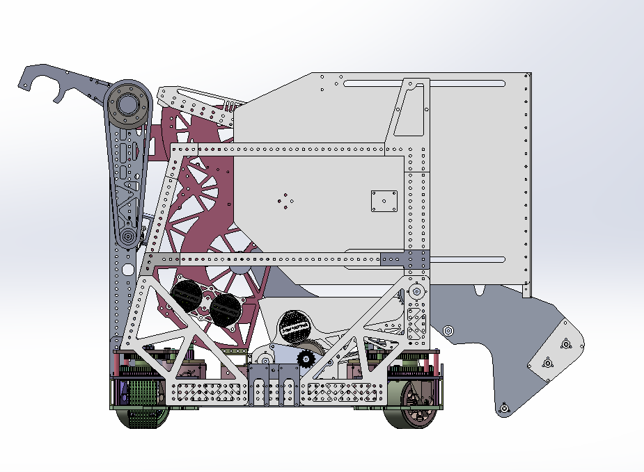
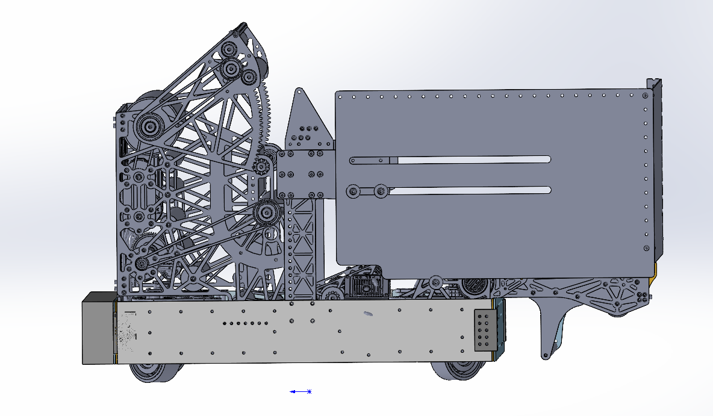

四角 swerve 底盘、底板开孔、电控空间和上层机构安装基准。
FRC Team 8011 / 广州哇一 / Founded 2019
WAYI 2026
以完整 CAD 为主视觉，鼠标移动到不同机构时保留整机轮廓，并突出当前模块，方便队员和访客按结构理解机器人。
Technical overview
Robot architecture
前端拾取机构独立展示，用于说明球进入机器人的第一段路径。
内部整理与转运结构，解释球如何被导向射球机构。
双滚筒射球结构、侧板支撑和发射角度预留。
Robot film
机器人宣传视频
这里放置 8011 机器人宣传片，用真实运行画面补充 CAD 技术展示，让访客同时看到设计结构和赛场表现。
Subsystem breakdown
像技术手册一样拆解机器人
这一部分把完整机器人拆成底盘、拾取、Hopper 转运和射球四个模块。每年更新新机器人时，只需要替换 CAD 渲染和模块说明。

01 / Drivetrain
27 × 27 英寸全向底盘
底盘采用 SDS MK5n swerve，在为整机球路留出空间的同时保持灵活的场上移动能力。
- 1/16 英寸减重开孔底板承载电池与电控；上方 Roller Floor 可整体翻起，快速露出维护区域。
- 底盘两侧设置塑料滑条，帮助机器人更平顺地越过场地 Bump。
- 保险杠使用 WCP 锥形安装座，聚碳酸酯内壁同时约束并支撑可展开 Hopper。

02 / Pickup
全宽翻转式拾取机构
全宽 Slapdown Intake 由一台 Kraken X60 和紧凑型 MAXSpline 齿轮箱驱动展开，在缩小收纳空间的同时保持快速响应。
- 两台 X60 驱动 2 英寸硅胶包覆碳纤维主滚筒，并配合 1.25 英寸碳纤维 Kicker Bar 快速把球送入机器人。
- 两根套有 0.625 英寸碳纤维管的六角轴与 3D 打印惰轮隔套共同导球，避免球再次接触主滚筒。
- 1/8 英寸厚的 2 × 1 英寸铝制防撞梁与可快速更换的 SRPP 侧板共同承受正面冲击。

03 / Hopper
扩展式 Hopper 与 Roller Floor
Hopper 由随拾取机构运动的水平扩展段和安装在攀爬结构上的竖直扩展段组成，使用 #25 链条与一台 Kraken X60 控制升降。
- 侧面采用 1/8 英寸聚碳酸酯，前部使用双层瓦楞塑料，并通过折弯金属角件、VHB 与铆钉连接。
- 侧板斜槽和定制法兰隔柱协调扩展动作；连接攀爬结构的方管与折弯挡板把球保留在 Shooter 一侧。
- 下方 Roller Floor 由 5 根 1 英寸死轴滚筒和 3 根 2 英寸 Flex Wheel 滚筒组成，通过逐步增大的倾角减少卡球并提高输送效率。

04 / Shooter
全宽 Ball Tunnel 与可调射球机构
两块相距 25 英寸的 3/16 英寸铝制侧板构成全宽 Ball Tunnel，把 Roller Floor 送来的球预加速至约 70% 的出射速度。
- Ball Tunnel 使用两台 X60 和 1.25 英寸死轴背压滚筒；独立 X60 驱动 2 英寸 Feeder Roller 将球送至竖直路径。
- 3.5 英寸铝制主射球滚筒与三根 Hood Roller 机械联动，接触面使用滑板砂带，并由四台 X60 提供远距离射球功率。
- Hood 由一台 Kraken X44 驱动，并通过横跨机器人的 Jackshaft 传递扭矩，实现宽范围出射角调节。
Robot evolution / iteration
两次迭代，看见结构如何收敛
从第一版的侧视布局到第二版更紧凑的机构整合，拖动对比两次方案在包装空间、传动结构和维护路径上的变化。


02 / 第二次迭代 01 / 第一次迭代拖动滑块：左侧第二次迭代 / 右侧第一次迭代
Software and data
从子系统到自动模式
8011 使用 WPILib Command-Based 架构，把每个机构、单项动作和完整得分流程分层组织，让裁判能从场上表现一路看懂程序如何协同机器人。
COMMAND-BASED ARCHITECTURE
先看懂程序怎样组织机器人
我们把程序分成三层：机构负责硬件，指令定义动作，复合指令把多个动作编排成裁判在场上看到的完整流程。
子系统
对应一个真实机构，例如底盘、拾取、转运或射球，集中管理电机、传感器和状态。
指令
告诉某个机构执行一个明确动作，例如设定飞轮转速、放下拾取或转向目标。
复合指令
把多个机构按顺序或并行组合，形成取球、移动、瞄准和射球的完整得分流程。
01
CORE SYSTEMS
五个核心系统
每个子系统只管理自己的硬件和闭环状态，再通过指令层与其他机构协同。
全向底盘
四轮 swerve 支持场地坐标控制；PathPlanner 跟随自动路径，并按联盟颜色自动镜像。
射球机构
依据实测距离表计算飞轮速度与俯仰角，移动射球时补偿底盘 X / Y 方向速度。
送球机构
双通道完成上送与后送；电流过高时停止送料防止卡球，LaserCAN 检测预装球是否到位。
地面取球
利用堵转电流寻找机械零点，再运动到经过测试的展开位置，滚轮完成地面取球。
视觉系统
三台 Limelight 从不同方向识别 AprilTag；MegaTag2 位姿与里程计融合，为路径和自动瞄准提供位置。
02
CORE COMMANDS
把机构变成场上动作
核心指令以“裁判能看到什么”为目标：瞄准、取球与射球流程都能独立触发，也能被自动程序复用。
移动中实时瞄准
右扳机触发后，视觉位姿与 HUB 目标位置形成航向误差，PID 在机器人移动时持续修正朝向。
场上效果：驾驶员保持移动，机器人自动面向目标。按场地区域取球
Intake Next To Hub、Wall 与 Side 将不同位置的取球动作封装为可重复调用的指令。
场上效果：一键执行对应区域的取球动作。组合完整得分流程
ShootWithFeeder、PassTrench 与 BackShootGo 按顺序或并行协调飞轮、送料、取球和底盘。
场上效果：多个机构一次触发、按状态自动衔接。
03
KEY DESIGN
为比赛可靠性设计
这些设计让同一套程序在不同联盟、不同速度和不同球路状态下保持一致行为。
联盟自适应
自动识别红蓝方并翻转场地坐标系，一套路径逻辑适配两侧比赛。
移动射球补偿
分解底盘 X / Y 速度，预测释放球时的位置并补偿瞄准角度与射球速度。
传感保护
送料电流用于防卡球，LaserCAN 确认预装球，拾取堵转电流用于建立机械零点。
分层架构
底层子系统控制硬件，中层指令定义动作，上层复合指令编排完整流程。
04
AUTONOMOUS MODE
自动模式
路径点用 X、Y、朝向角和移动速度四项数据描述；坐标与动作逻辑分离，让路线更容易修改和复用。


PATH POINT = X / Y / HEADING / SPEED
路径与动作协同
程序预加载路线并根据联盟颜色完成镜像。机器人沿路径取球时提前预热飞轮，到达射击区域后由视觉与航向 PID 自动修正，再送料完成射球。
7套比赛路线
20 ms调度周期预算
2×红蓝联盟镜像
AUTONOMOUS SCORING CYCLE
一次自动得分循环
从路线加载到下一次循环，每一步都对应真实程序中的状态判断与命令组合。
按联盟与起始侧生成路径。
拾取、转运与底盘并行运行。
抵达射击点前达到目标转速。
AprilTag 观测融合里程计。
路径有偏差时仍修正朝向。
达到速度与角度后完成射球。
坐标与动作逻辑分离，修改路线只需调整路径数组。
红蓝方自动镜像，一套代码适配两侧比赛。
动作支持顺序、并行与竞争组合。
条件判断与提前退出避免自动流程卡死。
飞轮提前预热，抵达射击点时已接近目标转速。
视觉自瞄实时修正路径误差。
8011 EAGLEEYE
数据侦察系统
从赛程分配、现场记录和数据质量检查，到单队分析、选队清单与联盟模拟，形成完整的比赛决策链路。
打开 8011 EagleEye 数据侦察系统 →
Resources